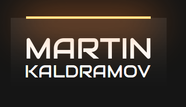

Projects
JavaScript Brain Workout
The project consists of interesting algorithmic challenges, solved using JavaScript.
Here are some of the more interesting ones:
- fizz_buzz_without_loops_and_conditionals.js - Solution of the popular FizzBuzz challenge, without using recursion and logical operators only
- Matrix Elements Sum.js - Used map's callback function second index argument (map(function(_, i))) to calculate the sum of a matrix
- Sort By Height.js - Using filter() and map() to sort the elements of an array in particular order
Carnificina
A tool for assigning tickets between team members on rotation basis. Logic is used so that repetition of assigned cases is avoided. The backend is built wit Node.js and Express.js
View Project

Portfolio
This is a different portfolio (which is not finished yet). It has some nice looking CSS styles (which is why it is included here).
View ProjectMemory Match Game
As the tite suggests, this is a memory match game built with Vanilla JavaScript (the language's built-in timeout functions are used)
View ProjectReact JS Stamrt Todos
As it looks like, opposed to the title, a not too smart application (it is still not finished). A lot of React's functionality is used in the project, which is why it is included.
View Project